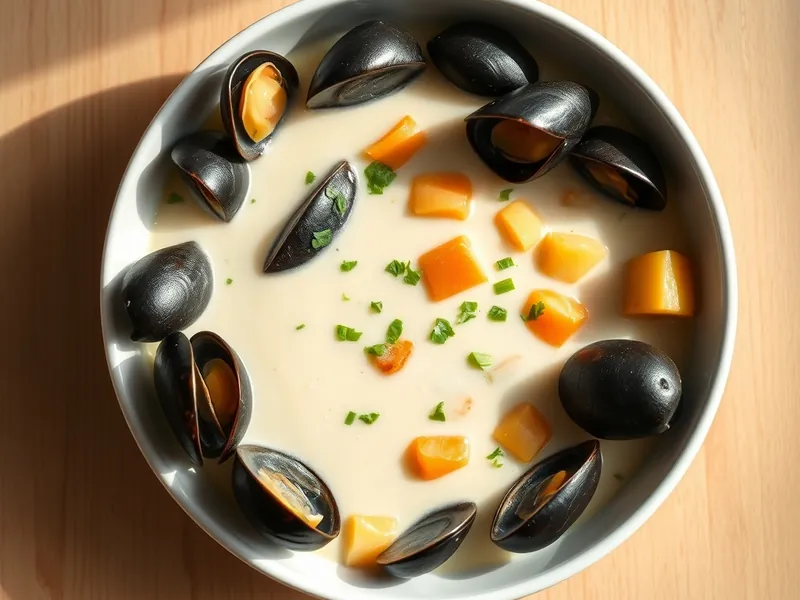

Сливочный суп с мидиями
Нежный сливочный суп с мидиями, картофелем, чесноком и петрушкой
35 мин4 порц.278 ккал на порциюБ 15 · Ж 16 · У 18Европейская кухня
Открыть в приложении: порции, таймеры, список покупок
Продукты на 4 порц.
- Мидии400 г
- Картофель2 шт
- Лук репчатый1 шт
- Сливки 20%200 мл
- Сливочное масло20 г
- Чеснок2 зуб.
- Вода700 мл
- Петрушка0,3 пучка
- Соль1 ч. л.
- Перец чёрный молотый1 щеп.
Как готовить
- Разморозьте очищенные мидии в холодильнике или под холодной водой и откиньте на дуршлаг.
- Мелко нарежьте лук и обжарьте на сливочном масле в кастрюле на среднем огне 4 минуты до прозрачности, добавьте чеснок и прогрейте 1 минуту.
- Положите картофель мелкими кубиками, залейте горячей водой и варите 15 минут, пока картофель не станет мягким.
- Влейте сливки, добавьте мидии, посолите и поперчите. Прогрейте на слабом огне 3 минуты, не доводя до кипения.
- Посыпьте рубленой петрушкой и подавайте сразу.
Совет. Мидии уже готовы после заморозки, их нужно только прогреть: дольше 5 минут они становятся жёсткими.